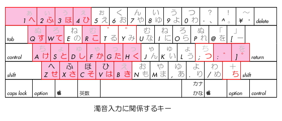
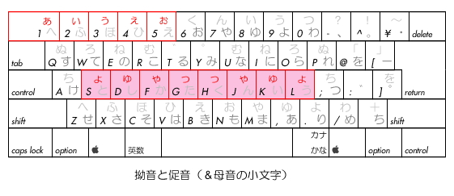
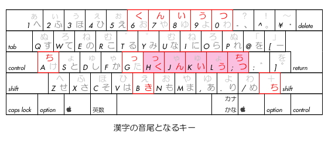
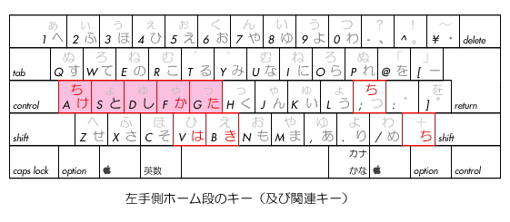
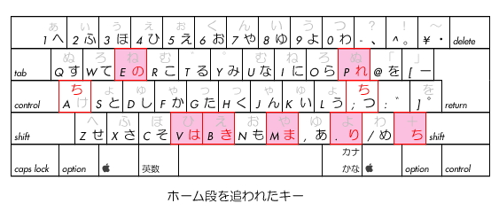
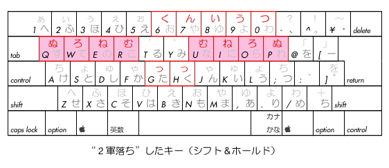
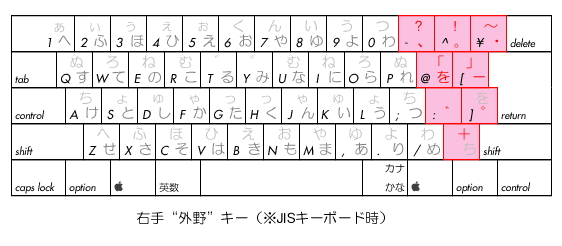
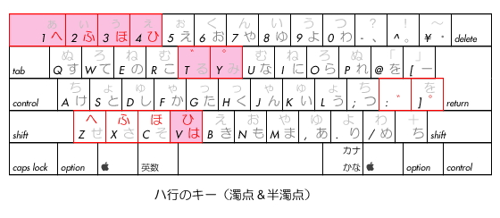
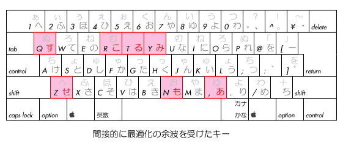

ようこそ！こちらは『かな改アドバンス』のサポートページです。
【『JISかな改』とは？】
JISかな配列を、日本語の特性と 文字の使用頻度に基づいて最適化した キー配列です。
具体的には、
１．漢字の読みの“音尾”となる「んいうつ」を右手ホームポジションに移動。
２．濁音を持つ文字を左手側にまとめ、濁点を打ちやすい位置に移動。
３．拗音をホーム段に移動（シフト側）。かつ左右対称に配置。
４．最上段の文字を下段のシフト側にも配置。（＝タッチタイピングが可能）
５．右手外野のキーに記号類をまとめ、日本語の文章を打ちやすくした。
６．さらに、元配列との互換性や、運指・運動量等を考慮しキーを再配置。
７．JISキーボードをベースとしてＵＳキーボードにも対応。
です。
【配列図】

図１基本仕様（JISキーボード使用時）

図２参考仕様（ANSIキーボード使用時）
なお、『JISかな改アドバンス』の Mac OS X 版(ver.7.2.2)を、本ＨＰ内に限り、
暫定的に配布することにします。
ただし、Mac OS X では、システムリソースにパッチを当てるわけにはいかないので、
当該ファイルを手動で入れ替えていただくことになります。
入れ換えるには、管理者権限が必要となります。（たいがいはマシンのオーナーです）
入れ換えるファイルは、
「/System/Library/Keyboard
Layouts/AppleKeyboardLayouts.bundle/Contents」内の
『AppleKeyboardLayouts-B.dat』と『AppleKeyboardLayouts-L.dat』
です。（※Mac OS X 10.6.xの場合）
（※「AppleKeyboardLayouts.bundle」を開く時は、コンテキストメニューから開きます）
初めに元のファイルをバックアップします。（※普通に移動するだけでコピーになります）
次に、当ファイルをこのフォルダーにコピー（入れ換え）します。
この時にパスワードが必要となります。
入れ換えたら、一度ログアウトするか、再起動してください。
なお、当然ですが、自己責任で、元のファイルは捨てないで、大切に保存しておいてください。
万一不具合が発生した場合には、この逆の操作をして元に戻してください。
ダウンロードは こちら から。（Mac OS X
10.6.x用：zip形式アーカイブ・450.1KB）
（当該ファイルのみです）
なお、Mac OS X 10.6.4以前 〜 Mac OS X 10.5.x に関しては、
動作確認しておりませんし、インストール場所の確認もしておりませんが、
おそらく似たような場所の似たようなもの(爆)(爆)(爆)を入れ換えれば
使えるのではないかと…。(^.^;;;
・・・・・・・・・・・・・・・・・・・・・・・・・・・・・・・・・・・・・・・・・・・
また、Mac OS X 10.4.11〜10.2.x のMacの場合は、入れ換えるファイルは、
「System/Library/Keyboard
Layouts/Japanese.bundle/Contents/Resources」内の
『Japanese.rsrc』となります。
（※「Japanese.bundle」を開く時は、コンテキストメニューから開きます）
入れ換えのやり方は、↑の Mac OS X 10.6.4用 の場合と同じです。
ダウンロードは
こちら から。（Mac OS X
10.4.11〜10.2.x用：zip形式アーカイブ・4.9KB）
（当該ファイルのみです）
・・・・・・・・・・・・・・・・・・・・・・・・・・・・・・・・・・・・・・・・・・・
それから、いまだに使われているところが多い Mac OS 9 版も作りました。
（ウチでも 時々 テキスト編集用に、Mac OS 9 の iBookを使用(笑)）
なお、動作確認のできるマシンがないので、確認したのは iBookのみです。
ちなみに、今回からは、Mac OS 9 版でも itlkに対応したバージョンになっています。
（※具体的には、カギカッコの位置とそれに変動する部分が
ＵＳキーボードとJISキーボードで 異なります）
ダウンロードは こちら から。（Mac OS 9 用：
sit形式アーカイブ・4.2KB）
（リソースファイルのみ）
公開版の『JISかな改』のようなインストーラーはないので、
『ResEdit』を使って、「System」のリソースを書き換えてください。(^.^;;;ゞ
（※くれぐれもバックアップをお忘れにならないよう）
面倒とか、リスクを冒したくないと思われる方は おやめください。
あくまでも、Mac OS X 版の かな改アドバンスを お気に入られた上で、
他の旧ＯＳマシン上でも使いたいと思われる方向けです。(^_^;
書き換えの方法は、『kkaix9.rsrc』の中に含まれている２つのリソースの中身(*)を、
ご使用のシステムの中に含まれているリソースの中のものと入れ替えるのですが、
この時、元のシステムに含まれている他のリソースフォークを消さないようにします。
（* 手動で行なう時は、「かな」のほうだけでよいです）
そのため、１つずつ、オープン→コピー／ペースト→クローズを行ない、
それを繰り返します。（計２回）
『ResEdit』のアラートが出たら、［Ｙｅｓ］のほうを押します。
その後は、Mac OS 9 を再起動します。
【 JISかな配列と『JISかな改』】
『JISかな改』は その名の通り、JISかな配列を ベースとしています。
見るだけで気分が悪くなってしまうような(笑)悪評高い旧JISかな配列を、
なぜ改造してまで使うことにしたのか――。
ここでは、その理由を、旧JISかな配列のコンセプトを探ることで
説明していきたいと思います。
（※以下、旧JISかな配列を「旧配列」もしくは「旧JIS」等と呼びます）
【他のかな配列との比較】
いきなりですが、まずは、他の かな配列との比較から見ていきたいと思います。
というか、いきなりですが、結論的に言うと、
他のかな配列は、文字の使用頻度をあまりにも優先したために、
日本語の文法や特性といったものを、全く考慮していません。
唯一、日本語の特性に配慮し、
運指が左右交互になるように工夫された 新JISでさえ、
一見して、それが考慮されているようには見えないのです。
このことは とても 重要なことで、
日本語入力をする人（＝キーボードで文字入力をする人）の ほとんどは
熟練者ではない、ということを忘れています。
つまり、その配列は、簡単な説明で 納得のいくような、
日本語に対する配慮が見て取れなくてはならないということです。
使いこなしてみないとわからないというのでは 失格です。
そういう意味では、既存の有名な かな配列は、
どれも皆、熟練者向けと言わざるを得ず、
それが かな入力に対して、しきいの高いイメージを持たせています。
また、たとえ熟練者向けだとしても、日本語の特性を考慮していない配列では、
いかに使用頻度順に文字が割り振られていようと、
そんなものは、日本語を打つのには不適当であると私は考えます。
さて、このことを 旧配列について見てみますと、
確かに、その成立年代や、ベースとなっている機械式タイプライターのことを考えれば、
現代の仮名遣いを打つには、そのままでは 適切とは言いかねます。
しかし、かなり日本語の特性を考慮した跡が、垣間見られます。
例えば、まず、中央にある「き」と「く」は、
漢字の音尾(韻尾)を反映していると考えられます。
また、「ふ」と「う」が 最上段にあるのは、
小文字(拗音)を持つ文字をまとめて配置したからで、（例外もありますが）
これらと「せ」「け」「れ」「め」「ね」「へ」が
左右交互打鍵になるように作られています。
（※旧仮名遣いでは 漢字の読みとして、
エ段の“音頭”に「う」や「ふ」が 付く読みが 多いからです）
（※なお、これらの“音頭”と「き」の組み合わせが
左右交互打鍵で 打てることにも 注目する必要があります）
それから、右手外野キーに割り振られている文字は、
もともとのカナタイプでは、下段のシフト側に配置されていたものであり、
最初から使いにくい右手外野キーにあったわけではないんですね。
つまり、良くないのは、古いかな配列そのものではなく、
それを、ほとんど そのまま、パソコン／ワープロ用の かな配列として転用し、
かつ、何に囚われたのか、
最上段と一部のキー以外には シフト側に文字を配置しないという
ヘンテコリンなコンセプトにしてしまった連中(爆)なのです。
（だからお役所とバカな技術者はキライだ...^^;;;）
これを、適正な形で、現代の日本語（仮名遣い）に合わせ、
配置を最適化しようというプロジェクトが、『JISかな改』なのです。
【濁音と濁点の配置】
濁点を文字の１つと見なして 内側中央10列３段の中に配置するか、
旧配列のように 外野に置き、濁音を持つキーを左側に配置するかは
異論のあるところかもしれません。
しかし私は、結論から言って、旧JISのように配置する道を選びました。
なぜかというと、まず１つには、見てわかりやすいからです。
また、もう１つは、濁点は文字ではないという思いが強いからです。
「見てわかりやすい」というのは、
初めにも書いたように、重要なポイントです。
濁点を右側に置き、濁音を持つ文字を左側にまとめることによって、
一見して、左右交互打鍵でそれらが入力できることが わかります。

また「濁点は文字ではない」ということは、すなわち、
濁点が先に打たれることはないということを意味しています。
似たような意味では、「ん」も 先に来ることは ありません。
が、しかし、いずれ、特殊な読みとして使うこともできるし、
稀には、アフリカのほうでは、人名などとして 使われることも あります。
（※「ん」は もともと「む(＝无)」からきています）
また、せっかくある右手外野キーを有効活用するという観点からも
濁点は、右手外野に配置するのが、最善であるといえます。
とはいえ、旧JISかな配列では 濁点は上段に配置されており、
これでは あまりにも 使用頻度を考慮していないと言わざるを得ない(*)ので、
内側10列の外で 最も打ちやすい［け］の位置が、最適の位置ではないかと思われます。
（* もともとのカナタイプでは、ホーム段は上段と見なされていたのではないかと推測されますが、
ここでは、それについては考えないことにします）
そして、これに伴い、『JISかな改』では、
濁音を持つ文字を すべて 左側にまとめることにしました。
（※「ぢ」と「づ」は 現代仮名遣いでは ほとんど「じ」と「ず」に 置き換えられてしまうので、
実質的には 濁音に含めなくてもよいと思われます）
すると、移動するべき文字が いくつかあることが わかりますが、
これらの処遇に関しては、後でおいおい述べていくことにします。
なお、移動してしまうと せっかくの利点が失われてしまうのでは？と
思われる方もおられるかと思いますが、
これに関しては、後に述べるように、
それらの文字と組み合わせて使われる文字（＝音尾）を最適化することにより、
左側に移しても 全く遜色がないばかりか、
以前にも増して打ちやすくなりますので 心配は いりません。
【拗音（ゃゅょ）について】
かな配列における弱点といえば、上に述べた濁音の他に、
拗音の入力に関して、特に打ちにくいと言わざるを得ません。
なぜなら拗音は、旧JIS配列では、最上段に置かれているからです。
これは おそらく、小文字を大文字と同じキーに割り振りたかった(苦笑)ということと、
それを、何らかの理由から、最上段に置きたかった(爆)ためと思われます。
しかし、元々のカナタイプを見ても、
［い］のキーには「ぃ」が割り当てられていますから、
中段や上段に拗音を配置することも
決して不可能ではなかったと推測されます。
ということは、むしろ、機構上の理由よりも、
「小文字は大文字と同じキーに割り振るべき」という固定観念を
優先させたのではないか？と思われます。
いずれにしても、このままでは、拗音の入力は とても 不便です。
そこで、これらに関しては、他の かな配列でも そうしているように、
大文字とは別個のものとして捉え、最適化したほうがよいと思います。
結論からいえば、私は、これを、そのままの並びで下ろしてきて、
ホーム段のシフト側に置くのが、最も使いやすいのではないかと思います。

そうすることにより、
「しゃ/しゅ/しょ」などが とても 楽に打てるようになるだけでなく、
後に述べますように、漢字の音尾を最適化することにより、
二重母音の「〜ょう」や「〜ゃく」「〜ゅん/〜ゅつ」なども、
楽に打てるようになります。
また、これに合わせて、促音「っ」も、同様のものとして扱うことにします。
すると、これは、そのままの位置よりも、
ホーム段中央(シフト側)に配置したほうが 打ちやすいし、
ある意味“なじみ”もいいのではないかと思われます。
（※音尾の「き」や「く」が 促音化することが とても よくあります）
このため、これにより、「〜ゃっ/ゅっ/ょっ」が
旧配列とは 比べものにならないほど、楽に打てるようになります。
また、例えば、「〜角形」が「〜かくけい」でも「かっけい」でも
同じ運指で打てることがわかり、このことから、 ある意味、
日本語の特性に気づくことさえあるかもしれません。(笑)
さて、『JISかな改』が ユニークな点は、それだけでなく、さらに、
この拗音と促音を、左右対称に配置していることです。
これは、一見、無駄なように見えますが、
シフトキーの操作を反対側の手ですることを考慮したため
このようになっているのです。
つまり、拗音と共に使われるイ段の文字（「し」や「り」など）は、
残念ながら、片方だけにまとめるというわけにはいかないので、
拗音の入力効率をよくするためには、両方に置く必要があるんですね。
（※シフト操作を含め、すべての組み合わせが左右交互打鍵になるようにするため）
また、拗音と促音を「対称」にしたのは、
そのほうが、人間工学的にも、大脳生理学的にも、
理に適っているからです。
これらのことを逆に考えてみると、
まさに旧配列での拗音の配置が、絶妙な割り当てだったのではないか
と思えてくるから不思議です。(笑)
【ホーム段の文字（１）】
これは、旧配列では、
左手と右手では、大きくコンセプトが異なるように思われます。
まず左手から見てみると、
これは、かなり使用頻度を反映した配置になっています。
が、唯一そうでないのは「ち」です。
これは、おそらく、小指では機械式タイプライターのキーは押しにくいので、
そのため、比較的使用頻度の多くないものを配置したのではないかと考えられます。
それから右手側ですが、これらは「の」を除いて、
それほど使用頻度が多くない文字ばかりです。
なので、これらの配置に関しては、どのような考え方に基づいたものなのか、
ちょっと想像がつきません。
あえて言うと、「ま」は「〜ます」などとしてよく使われますし、
「り」は ラ行五段の連用形や、「びっくり」など副詞の一部としてよく使われます。
また「れ」も ラ行五段の活用形や 一段動詞として、よく使われます。
日本語の流れを考えると、確かに右手側にあったほうが、
わかりやすいとはいえますし、
また、濁音を持たないので、右手側がよいとはいえますが、
それでも、やはり、使用頻度という点からいえば、
ホーム段に置くほどのものでは ありません。
（※ホーム段を上段と見なせば、若干 使用頻度は高いといえるかもしれませんが）
そこで これに変わるコンセプトとして、私は、
Ｍ式で有名な森田先生が見い出されたように、
漢字の音の組み合わせに着目し、
その“音尾(韻尾)”を配置するのが、最も効率良く、
かつ最善の配置ではないかと考えました。
すると、これは、左手に配置された「か」や「は」などと共に用いて、
非常に快適な左右交互打鍵が実現できるようになるのです。
また この考え方は、中央に［き］と［く］が 配置されていることも含めて考えると、
旧配列のコンセプトとも合致するのではないかと思われます。
そこで、右手側ホーム段には、「く」に並べて、
「ん」「い」「う」「つ」と 配置することにしました。

この順番は、使用頻度を考慮した結果でもありますが、
ほぼ、もともとの位置の指使いを反映したものとも なっていて、
旧配列からの移行も 比較的スムーズにできますし、
また、使いこなしも早く覚えることができるのではないかと思われます。
【ホーム段の文字（２）】
さて、改めて左手側のホーム段を見てみると、
確かに それぞれ、それなりに使用頻度の高い文字が並んでいます。
しかし、それら以上に、上段の「か」や「た」のほうが、
漢字の読みにおいても、和文における使われ方をみても、
例を挙げるまでもなく、使用頻度が多いですから、
まずは、それらを優先して配置するべきなのではないかと思われます。
そこで、まず、「か」を、同じ指使いのままホーム段に下ろし、
最も打ちやすい［は］の位置に置くことにします。
次に、同様に「た」も ホーム段に下ろして［ち］と入れ換えると、
指使いも変わらず、良いような感じがします。
ところが、「た」は、和文においては、
文末の「〜だ」、動詞の活用語尾の「〜た」として かなりよく使われる文字です。
もちろん、これをホーム段に置いただけでも かなりの効率ＵＰになるのですが、
それを使い込んでいくと、［ち］の位置、すなわち、小指の担当とするには、
かなり荷が重いということが わかってきます。
なので、これは、多少（かなり？）の犠牲を払ってでも、
人差し指の担当にしたいところです。
が、現状では、すでに［は］の位置は「か」で 決定していますので、
あとは［き］の位置に置くしかないということになります。
次に、「し」と「と」については、使用頻度やその使われ方を見ても、
それ以上 動かす必要はないと思われるので、そのままとします。
それから、「ち」については、その使われ方を見てみると、
漢字の音尾として使われる場合や、タ行五段の連用形として使われる場合の他に、
「ちょっと」「ちょうど」 「ちゃんと」「〜ちゃって」などのように、
拗音と共に使われる場合が かなりあることが わかります。
とはいえ、ホーム段に置くほどの使用頻度があるとは 考えられませんので、
これは、その位置のままシフト側に回すことにします(*)。
（* JISキーボードでは 旧［ろ］のアンシフト側にも 配置し、
漢字の音尾などに使われる場合にも対応できるようにしています）
では、この［ち］の位置にふさわしいものは何かと考えると、
ちょうど、右側から左側に異動になることが決定している「け」が
良いのではないかと思われます。
「け」は、漢字においては、「〜けい」「〜けん」などとしてよく使われますし、
和文においては、カ行五段の活用形や下一段活用の語尾としてよく使われる文字です。
旧配列では、「け」は ちょうど反対側の小指の担当となっており、
ここならば、ホーム段をはじめ、他の同側の文字と組み合わせても使いやすいので、
最適のポジションといえるのではないでしょうか。

これらは、初めのうちは、打鍵効率よりも指なじみのほうが優先して、
若干 使いにくかったり、覚えにくかったりするかもしれません。
しかし、例えば、最適化した左右のホーム段だけを使って、
「かんけい」などと打ってみると、その打鍵効率の良さが、
実感できるのではないかと思われます。
【ホーム段を追われた文字】
ここで、『JISかな改』のデメリットにも触れておかなくてはなりません。
人生、楽あれば苦あり。(笑)
使いやすくなったものがある反面、そのあおりを受けて、
少々使いにくくなるものが出てきてしまうのは 仕方のないことです。
まず、「は」ですが、これは、左手の指の動かしやすさからすると、
元の位置に次いで打ちやすいのは、［ひ］の位置です。
幸いなことに「ひ」は、それほどには 使用頻度が高くありませんから、
この場は「は」に譲ってもらって、他に引っ越してもらうことにします。
それでは「ひ」は どうするのかというと、
これは、後でも述べるように、他のハ行の文字とまとめて最上段に置き、
同じ位置のまま、そのシフト側にも配置することにします。
次に、「き」ですが、これは、本当なら、
旧配列のコンセプトを引き継ぎ、そのままにしておきたいところですが、
仕方がないので、その位置のまま下げて［こ］の位置に置くことにします。
これは、元々の位置からすると、かなり打ちにくくなってしまいますが、
この［Ｂ］の位置は、なんとなれば 右手側からも打てるので、
音尾に「〜き」がくる場合に、強引に(笑)左右交互打鍵にすることができます。
事実、［Ｂ］の位置は、ホーム段中央の［Ｇ］［Ｈ］の
ちょうど真ん中に位置しています。
よくパソコンの教則本では、最上段の［６］を右手の担当としていますが、
これは、［Ｂ］の位置よりもさらに左に寄っていますから、
それを考えたら、［Ｂ］を右手で打つことは、さほど大変なことでは ありません。
（というか、そもそも教則本が間違えてるともいえるのだが...(爆)）
「こ」は ちょうど 同列にあった［か］の位置が空いていますので、
ここに置くことにします。
（※人によっては、旧［か］に「き」を置けば良いのでは？と思われるかと思いますが、
上に述べたように、漢字の音尾として右手で打つことを考え、このようにしました）
それから、「ち」については、上でも述べた通り、
同位置のままシフト側に回すとともに、
JISキーボードでは、下段右下の［ろ］の アンシフト側にも配置し、
漢字の音尾や タ行五段の活用形として使われる場合の使い勝手にも配慮しました。
さて、今度は、右手側に視点を移してみます。
まず、これまで 右手ホーム段 人差し指の担当となっていた「ま」は、
その位置のまま下げて、旧［も］の位置に置くことにします。
こうすると、シフト側の「や」と組み合わせて、同位置のまま、
シフト操作だけで「やま」が打てるので 良いと思ったからですが、
それ以外にも「〜てしまう/しまい」などが 楽に打てて良いです。
次に、「の」は、実は かなり使用頻度が高いので、
同側のまま下におろす等よりも、左側の［い］の空いた跡に置くことにします。
すると、指使いも変わらず、中指の場合 上段のほうが 打ちやすいので、
使い勝手をほとんど損なうことなく“配置変え”することが できます。
（※なんとなれば、右手側の［に］の位置に「の」を置き、「に」を［い］に異動するという選択肢もあるのですが、
そうすると、それほど使い勝手が変わらないのに、さらに混乱を増やすことになるので、
そのようにはしませんでした）
それから、「り」は、使用頻度でいえば「ら」より多く、「る」より少ないのですが、
逆に「る」は 本来 使用頻度が高いのに、
旧配列では やや打ちにくい位置に割り当てられてしまっています。
そこで この際、「り」を［る］の位置に置き、
「る」を 別のところに引っ越すことにします。
（※結果的には、旧［す］の位置に）
さて、残りの「れ」ですが、
これは、その上の［せ］が 引っ越して空いていますので、
そこに移動することにします。

【２軍落ち】
こういうと、ちょっと聞こえが悪いですが、
端的にイメージしやすいのではないかと思います。
それは、極端に使用頻度の低い一群（ぬねむろ）の総称です。
キーボードは、改めて言うまでもなく、
元々は英字を入力するために開発されたものです。
ここに、47文字もある「かな」を割り振ろうというのですから、
ピッタリと収まらないのは 当然です。
この問題をうまく“回避”したのが、
いわゆる「親指シフト方式(NICOLA)」といわれるキーボードと、
それに付随するアイデア群ですね。
（※ただし決して配列そのものが優れているわけではありません）
それは ともかくとして、新JISなどの例を引くまでもなく、
この限られたキーボードを用いて 適正な再配置を行なおうとすれば、
小文字でなくても シフト側に回されてしまうものが 出てきてしまうのは
仕方のないことでしょう。
（※なお、キーボードそのものを日本語に合わせて改造する話は、
また別の所ですることにします）
この“２軍落ち”の対象となる文字を選別する基準は、
言うまでもなく「使用頻度」ということになります。
そして、それは、その逆と同様、
誰に聞いても異論なく決めることができますし、
また、そうでないといけません。
これを、『JISかな改』では、
「ぬねむろ」の４文字に絞りました。
（※最上段の文字を含めれば、さらに多くなりますが）
結論からいえば、これらを、
上段のシフト側に 左右対称に配置することにより、
いかに“２軍落ち”であっても、使い勝手を落とさないよう、
最大限の配慮をしています。
特に、同側の文字との組み合わせ（＝運指）に留意し、
このため、右手最上段のシフト側に「くんいうつ」を配置して、
シフトキーを押さえたままで、「ねん」「ねつ」「ろう」などの読みが
楽な運指で打てるような順番に並べました。
（※TIPS：「ろく」は 左手側の［ろ］を使うとヨイです(笑)）

これらに関しては、先に述べたような
「指使いを変えない」というコンセプトからは 外れるわけですが、
使用頻度が少ないためか、全く違和感は感じられません。
むしろ、旧配列では１段飛びで打ちづらかった「ねん」が
楽に打てるようになって、効率アップしたのではないかとさえ思われます。
（※事実、旧配列では 一度下がってから２段上がることになりますが、
かな改では １段ずつ上がりながら打つので、右手の運動量は減ります）
【右手外野キー】
特に総称する言葉がないので、私はこう呼んでいますが、
具体的にいうと、濁点・半濁点を含めた
［ほ］［へ］［ー］［け］［む］［ろ］の８つのキーのことです。
（※ANSIキーボードでは６つ）
旧配列では 大文字は すべてアンシフト側に配置されているため、
この“右手外野キー”にも文字が割り振られています。
これを良いとみるかどうかは、人によって異なるのかもしれませんが、
やはり多くの かな配列で 文字が配置されていないところをみると、
置くべきではない／置いても使いにくいということが わかります。
参考までに、元々の英字配列では どうなっているのかというと、
ここには 記号類が配置されています。（当たり前ですが(笑)）
そこで、私が 常々打ちにくいと思っていた記号のうち、
まず句読点をシフト側から“格上げ”して、ここに配置することにします。
これは 逆にいえば、内側10列３段のシフト側から記号を排除したともいえます。
これにより、文章推敲の際、最も頻繁に行なわれる句読点の入力を
最小限の手間で済ませることができるようになります。(^-^)！
またそれから、
旧配列で 唯一、小文字でもないのに シフト側に配置されていた「を」を、
これまた“格上げ”して、ここのエリアに配置することにします。
そもそも「を」は、使用頻度としては 決して 少ない部類では ありません。
とはいえ、現代仮名遣いにおいては、
「を」は 読みの一部として使われることは ありませんから、
私は むしろ、これを 記号の一種として捉えるべきではないかと思います。
そういう意味でも、このエリアが、「を」を配置するのには
絶好のポジションであると思われます。
具体的にいうと、
まず、濁点と半濁点をそのままの並びで、ホーム段に下ろしてきます。
次に、その空いたところに「を」と 長音記号(オンビキ)を置きます。
最後に、右手外野の最上段に句読点と中点(ナカグロ)を配置するのが、
最適なのではないかと思われます。

なお、それらのシフト側についてですが、
まず、カギカッコについては、ANSI配列における角カッコ(大カッコ)にならい、
上段に横に並べます。
ANSI配列との互換性を考えて、そちらを優先することにしました。
（※optionキーを使って入力する角カッコは、キーボードの刻印どおりです）
その他は、特にどうしてもという理由はないのですが、
「波ダーシ」については、やはり、かな改ANSI版との互換性を考え、
ナカグロのシフト側ということにさせてもらいました。
（※option+shiftを使って入力する「〜」は、キーボードの刻印どおりです）
濁点のシフト側は、隣の「ち」との組み合わせを考えて、
シフト＆ホールドで「ぢ」が打てるよう、
そのまま濁点としましたが、
半濁点のシフト側は、シフト＆ホールドで カギカッコと組み合わせて使えるように、
「を」としました。(^o^;;;
また、JISキーボードにしかない下段の外野キーのシフト側には「＋」を配置してありますが、
これは、MadDicにおいて、繰り返しの読みを「＋」で置き換えることにより
打鍵の省力化とヒット率の向上を計っているため、これに対応したものです。
（※当然ですが「＋」は option+shift＋；でも 入力できます）
【「へ」と「ほ」〜 最上段の文字の扱い 】
さて、左手側へ異動することが決定している「へ」と「ほ」ですが、
これは、意外とすんなりと決まりそうです。
というか、上にも少し書きましたが、
旧配列では、なるべく同じ行をまとめて配置するという“努力目標”がありますので、
それにならい、ちょうど［ふ］の周りに空きがあるので、
そこに、居場所を追い出された「ひ」とともに配置することにします。
この時、「あ」が 邪魔になるので、(笑)
これは 移動してもらうことにします。〈「あ」の行き先については 後述〉
［ぬ］の跡に「へ」、［う］の跡に「ひ」、［あ］の跡に「ほ」を
置くことにします。

ここで、特に『JISかな改』がユニークな点は、
最上段の文字を下段のシフト側にも配置していることです。(^-^)！
（左側だけでなく、右側も）
これにより、旧配列では不可能だったタッチタイピングにも
対応することができるようになりますし、
さまざまな入力場面に応じて、他のシフト側の文字と組み合わせて、
多様な文字入力ができるようになります。
例えば、「風呂」と打つ時には シフト側の［ふ］を使い、
「冬」と打つ時には 最上段の［ふ］を使うなど・・・。
また、同じキーに割り当てられた文字を使い、
「えき」「やま」「より」などを楽に打つことができるようにもなります。
（※アンダーラインは シフト側の意）
なお、今のところ、シフト側の上段中央には空きがありますので、
ここに 濁点と半濁点を置くことにより、シフト＆ホールドの技を使い、
シフト側のハ行の文字と組み合わせて、有効活用することもできます。
（※ただし、この部分の活用法には、異論もあるかもしれません）
【その他の文字】
さて、左側最上段にハ行を並べるために、
居場所を追い出された「あ」の行き先ですが、
これは、濁音もありませんから、
左側に置くよりは、むしろ右側に置いて活用したい文字です。
そこで、今のところ、ちょうど
［ね］が“２軍落ち”した跡が空いていますし、
指使いもちょうど同じ！ということで、そこに配置することにします。
それから、他に、今のところ、「も」が 行き先を失って あぶれています。
［み］を どかして(笑)、そこに置くのが 良いのではないかと思われます。
「み」は 使用頻度が それほど多くないにもかかわらず、
比較的打ちやすい場所(*)に割り当てられています。
（* ホーム段を３段目とした場合）
そこで、「み」は かつての［ん］が 置かれていた場所に移し、
［み］の跡に「も」を 持ってくると、それぞれの指使いも変わらず、
かなり使用頻度に準じた配置となるのではないかと思います。
一見、これらは“やりすぎ”のように見えるかもしれませんが、
どっちみち［ん］の跡を何かで埋めなくてはなりませんし、
最上段の文字との組み合わせを考慮すると、このほうが良いことがわかります。
（※旧配列では「みや」と打つのが大変でした）
日本語においてよく使われる言葉の一つである「思う」が、
同じキーのシフト操作だけで入力することができるようにもなります。
（※ちなみに、私は「お」は 組み合わせに応じて左手で打つようにしていますが...^^;;;）
それから、「る」と「す」に関しては、やや異論もあるかと思われますが、
５年以上の試運転を踏まえ、使用頻度と運指等だけでなく、
長時間打鍵の際の疲労度・運動量の低減を追求していくと、
最も犠牲が少なくて済むのが、この形であるということですので、
ご理解いただければと思います。(^_^;;;
ちなみに、新JISでも「す」は 小指の担当になっているといえば、
多少は お許しいただけるのではないかと思います。(^o^;;;
また、「す」を移動し、「こ」を再配置したことによって、
今まで打ちにくかった「少し」が 多少 打ちやすくなっています。(^_^;;;
このように、個人的には、「す」は ともかくとしても、「る」の 打ちやすさは、
和文の入力には 合っていて使いやすいのでは？と思っています。(^_^;
（※和文でよく使われる「〜くる」「〜なる」「〜
みる」が 左右交互打鍵で打てるようになります。
その代わり「〜する」は 同側になってしまいますが、この位置なら打ちにくくはないと思います）

なお、右手側から異動になった「せ」は、
ちょうど「つ」が 異動になって空いた［Ｚ］のところに置くことにします。
そうすると、ちょうど、上にも述べましたが、
サ行の他の文字とも ひとかたまりになって、
旧配列のコンセプトとも合いますので。
（※「せ」を 旧［た］の位置に置くのは、
「する」が打ちにくくなるので、却下です。(笑)）
【さいごに】
えと、基本的にこのページは、『かな改』のページを流用しているので、
同じことが何度か出てきます。(^.^;;;
とはいえ、最後ぐらいは、違うことを書かないといけないなと思うので、
１点だけ触れておくことにしたいと思います。(^_^;
洋の東西を問わず、ほとんどの人は、「数値」にごまかされます。
特に、近代以降の自然科学万能信仰の下で教育された人々（信奉者）に限って
それは 顕著です。
もちろん、科学の発達や検証には 数値的根拠が必要であることは 言うまでもありません。
しかし、世の中で我々がよく接する数値に限っては、
そのほとんどが意図的に生成されたものか、
意図せずとも、その数値が採取された環境に“ぶれ”があったりするわけです。
もちろん、善意の志の高い科学者たちは、そのような要素を排除するために、
数値を採取する前に、その環境（条件）が 正しいのかを 十分 検討してから
数値の採取をしようとします。
そのようにして採取された数値は、説得力／重みがあります。
ところが、特に広告などにたずさわる人間にとっては、
これが まさに 恰好の道具になってしまいます。(^o^;;;
「虎の威を借りる狐」というのは 昔から言われることですが、
そのように、数値の威力を借りて、自分たちに都合のいい“結果”を作り出し、
それをもって、何かを売りつけよう／買わせようとします。
（＃これとつるんだＴＶ局などが その手先(爆)(爆)(爆)というか、よくやる手法で、
まさに確信犯的共犯者と言っていいと思います）
志の低い科学者の場合も、同様と考えていいでしょう。
市井の好事家など、さらにマユにツバをつけて聞かないといけません。
彼らが根拠としている“数値”が どのような入力場面を想定しているのか、
何を材料としたのか、多くは公開されませんし、
仮にされていたとしても、それが 自分の入力場面と合っているのか わかりません。
そもそも、日本語入力とひとくちに言っても、
様々な入力場面があり、それらすべてに対応できなれば
所詮、そんなものは、特殊用途にすぎないわけです。
にも かかわらず、多くの人は、ただ単に、
公表された数値の多い少ないで判断してしまいます。
これは、非常に危険なことです。
それでは 私が思う、様々な用途に対応できる“根拠”とは何かといえば、
それは まさに「日本語を入力する」という根本の目的です。
「日本語入力」であるからには、そこに、一定の法則性が存在するわけです。
このことを考え、日本語の文法と特性をきちんと勉強し、
それを踏まえた上で、文字配列をうんぬんするべきであり、
キー配列を選択するべきではないのかということです。
・・・・・・・・・・・・・・・・・・・・・・・・・・・・・・・・・・・・・・・・